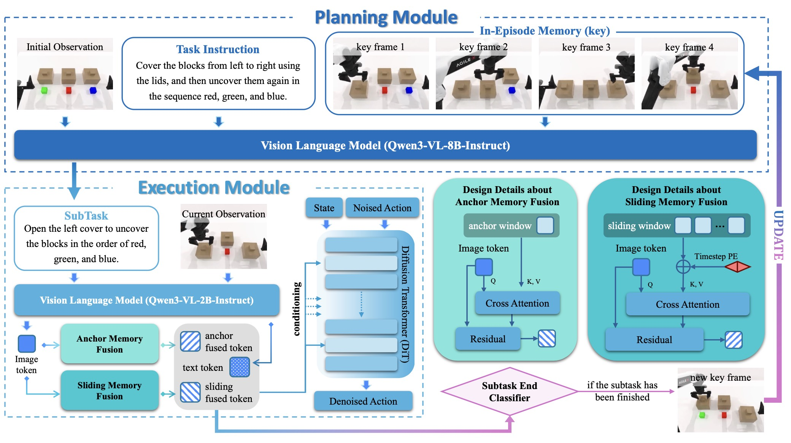
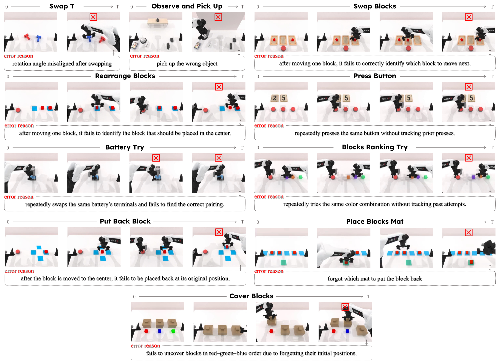
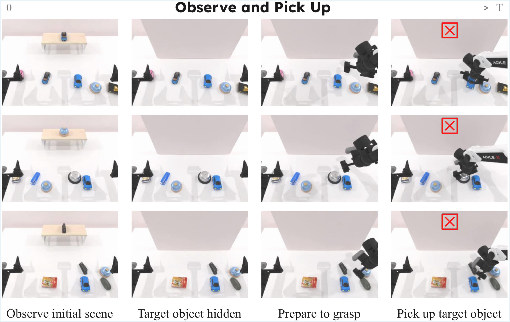
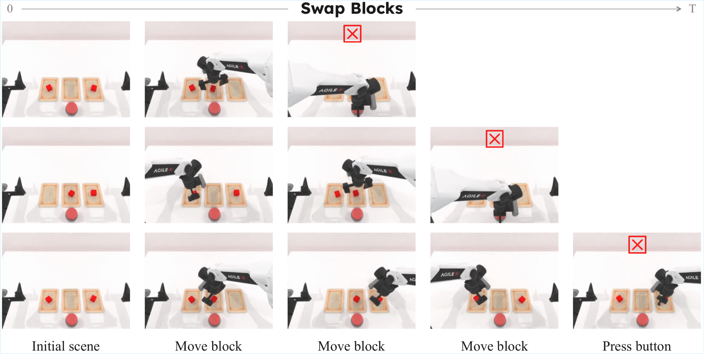
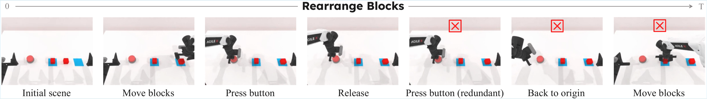
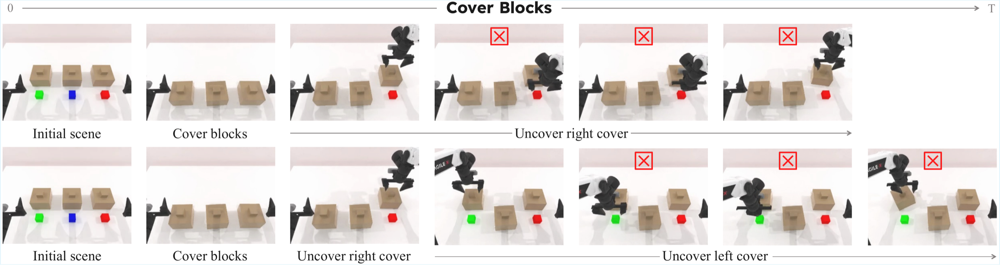
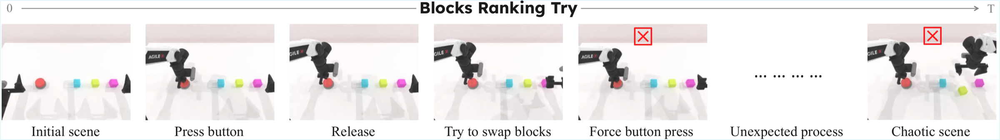
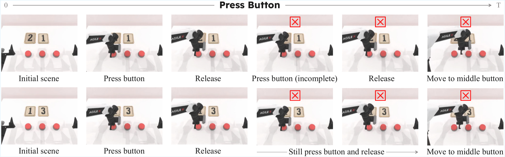
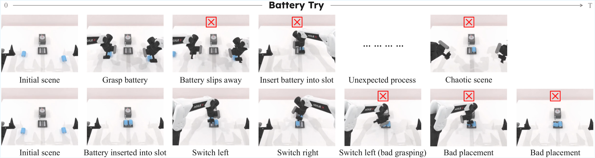

RMBench : Memory-Dependent Robotic Manipulation Benchmark with Insights into Policy Design
Supplementary Video
Overview

Abstract. Robotic manipulation policies have made rapid progress in recent years, yet most existing approaches give limited consideration to memory capabilities. Consequently, they struggle to solve tasks that require reasoning over historical observations and maintaining task-relevant information over time, which are common in real-world manipulation. Although several memory-aware policies have been proposed, systematic evaluation of memory-dependent manipulation remains underexplored, and the relationship between architectural choices and memory performance remains unclear. To address this gap, we introduce RMBench, a simulation benchmark of nine manipulation tasks spanning two levels of memory complexity for systematic evaluation of policy memory capabilities. We further propose Mem-0, a modular manipulation policy whose explicit memory components can be ablated independently. Evaluating eight policies on the nine simulated tasks and four policies on three physical tasks, we identify memory-related limitations in existing policies and show that the benefit of a memory component depends on whether the same information is already available elsewhere in the policy hierarchy, with subtask termination detection rather than memory representation forming the dominant bottleneck.
Mem-0 Policy

Mem-0 Pipeline. Mem-0 comprises a Planning Module and an Execution Module linked by a Subtask End Classifier. The Planning Module generates high-level subtasks from the task instruction, the initial observation, and the key memory window (In-Episode Memory), while the Execution Module produces low-level actions from the current observation, subtask, and fused anchor and sliding memories through a flow-matching policy. Upon subtask completion, a key frame is appended to the key memory window, enabling iterative planning and execution until the task terminates.
Visualization of Typical Baseline Errors

1. RMBench Task Descriptions
| Task | Description |
|---|---|
| Observe and Pick Up | The robot observes a reference object, remembers it after it is hidden, and picks up the matching object from the table. |
| Rearrange Blocks | The robot moves a middle block to a pad, presses a button, and moves another block back to the middle position. |
| Put Back Block | The robot moves a block to the center, presses a button, and returns the block to its original pad. |
| Swap Blocks | The robot swaps two blocks using an empty pad and then presses the confirmation button. |
| Swap T | The robot swaps the positions and orientations of two colored T-shaped blocks. |
| Battery Try | The robot repeatedly tries different battery insertion orders and orientations until both batteries are correctly inserted. |
| Blocks Ranking Try | The robot repeatedly arranges colored blocks and presses a button until the correct ordering is found. |
| Cover Blocks | The robot covers blocks from left to right, then uncovers them in the red–green–blue order. |
| Press Button | The robot presses two buttons according to the shown digits and then presses the confirmation button. |
2. Stability and Transferability of Task Memory Complexity
This section examines two properties of the Task Memory Complexity (TMC) protocol: whether it applies to tasks outside RMBench, and whether annotators other than the authors reproduce the intended labels. Both are necessary if TMC is to serve as a benchmark design criterion rather than as a post-hoc description of the tasks we happened to build.
Transferability to real-robot tasks
TMC is defined by the structure of the task, namely the minimum number of past observations that resolve its ambiguous decision points, and not by any policy architecture. It is therefore applicable wherever those decision points can be enumerated. To test this, we annotated 50 manipulation tasks drawn from the DROID and AgiBot World datasets. Annotation followed the protocol described in the main paper: enumerate the decision points at which the current observation admits more than one admissible action, identify the past observations that resolve each ambiguity, and discard redundant items. Every task in this set received a label within the existing space {M(0), M(1), M(n)}, and none required extending the label space or introducing task-specific exceptions. We report this as evidence of applicability rather than as a survey: the sample was not drawn so as to be representative of either dataset, and we therefore do not report a distribution over TMC levels for it. The claim supported by this exercise is that the protocol terminates with a well-defined label on tasks it was not designed around.
Annotation stability study
We further conducted a study with ten independent participants who had not previously read the paper. Each participant received only the written protocol and the three-way label space {M(0), M(1), M(n)}, and then annotated the same task set without consulting the authors or one another. Performance is measured as the per-annotator fraction of tasks whose label matches the reference label assigned by the task designers. As shown below, agreement averaged 96% over the ten participants, ranging from 100% to 80%. For calibration, a labeler guessing uniformly at random over the three-way space would reach 33%.
| Metric | Average | Highest | Lowest |
|---|---|---|---|
| Agreement (%) | 96 | 100 | 80 |
Discussion
Two conclusions follow, both deliberately narrow. First, TMC applies to tasks it was not designed around, provided their decision points are enumerable; it does not provide a procedure for tasks whose success criterion is itself ambiguous. Second, participants working from the written protocol alone recovered the intended labels in the large majority of cases, which indicates that the protocol is transmissible in writing and does not depend on tacit knowledge held by the authors. This is the property required for others to extend RMBench with new tasks.
We state three limitations explicitly, since they bound how the numbers above should be read. First, the reported quantity is agreement with a reference standard rather than chance-corrected agreement among annotators. Fleiss’ κ over the participants would be the stronger measure, since it separates genuine consensus from the agreement expected by chance and does not privilege the authors’ labels as ground truth; computing it requires retaining the full per-task label matrix, which we leave to an expanded study. The 96% figure should therefore be read as a measure of how faithfully the protocol transfers to new annotators, and not as an accuracy or as evidence that the labels are independent of the authors’ judgment. Second, the label space was closed and given to participants in advance, so the study measures consistency of application within that space rather than whether the space itself is the right abstraction. Third, the study reports aggregate agreement only, without a per-label breakdown. The M(1) versus M(n) boundary is the most delicate judgment the protocol requires, since it asks how finely a task decomposes into distinct semantic events, and a per-label breakdown would be needed to establish whether residual disagreement concentrates there.
3. Training Details
3.1. Planning Module
In the Planning Module, we fine-tune the vision-language model (Qwen3-VL-8B-Instruct) using LoRA via LlamaFactory to enable reasoning over key memories. After fine-tuning, we deploy the model with vLLM for efficient loading and inference. The key hyperparameters used for VLM fine-tuning are summarized below. Training is conducted on 8 NVIDIA A800 GPUs and the duration of training for a single task is approximately half an hour.
| Configuration | Value |
|---|---|
| VLM Backbone | Qwen3-VL-8B-Instruct |
| Fine-tuning Type | LoRA |
| LoRA Rank | 8 |
| Batch Size | 16 |
| Learning Rate | 1.0 × 10−4 |
| Epochs | 25 |
| LR Scheduler | Cosine |
| Warmup Ratio | 0.1 |
| Dtype | bf16 |
3.2. Execution Module
In this section, we detail the training infrastructure, training organization strategy, and hyperparameter configurations employed for the Execution Module in Mem-0.
Model Configuration
The Execution Module uses Qwen3-VL-2B-Instruct as its vision-language backbone Vexec, which is smaller than the Qwen3-VL-8B-Instruct model used by the Planning Module, since Vexec is queried at every control step whereas Vplan is queried only at subtask boundaries. The action head is a DiT-B transformer trained from scratch with a flow-matching objective, using an action horizon of H = 30 over a 16-dimensional bimanual action space. The Subtask End Classifier operates on the same conditioning vector ct as the action head; since ct concatenates the two fused memory tokens with the text token, each of width 2048, its dimension is 6144, which the classifier maps through two residual blocks (6144 → 2048 → 512) and a linear head to a scalar logit. The tables below report the full configuration, including the memory hyperparameters and the classifier loss terms. Two settings are worth highlighting. First, multiple actions from each chunk are executed before the next inference call, which is what allows the module to sustain a 5–10 Hz control rate despite invoking a 2B vision-language backbone. Second, the classifier is trained with a positive-class weight of 10.0, since termination frames constitute a small minority of the training frames.
Training Infrastructure and Time Budget
The Execution Module of Mem-0 utilizes a single-task training strategy, where the model is trained from scratch for each specific task. Training is conducted on 8 NVIDIA A800 GPUs with a global batch size of 448 over 30K iterations. The duration of training for a single task is approximately 18 hours.
Training Organization Strategy
Forward pass strategy. Given the memory-centric architecture of Mem-0, we employ a specialized training methodology. Within each batch, the processes of VLM token generation and DiT-based action chunk generation are executed in parallel. Conversely, the fusion of the sliding and anchor memories requires the temporal integrity of the data, so this stage is processed serially, which keeps all frames within an episode sequentially aligned.
This arrangement keeps the VLM tokens usable for memory fusion without breaking episode ordering. We additionally maintain a global data structure during training that stores the memory state of each episode, which allows memory to be carried across batch boundaries.
Dataloader implementation. Consequently, the dataloader was custom-designed to align with this architecture. Episodes are distributed as evenly as possible across all GPUs. Each GPU processes its assigned episodes using a specific number of workers and manages the dataloader reset independently. Due to the stochastic nature of the distribution, as training iterations progress, the frames within a global batch become temporally desynchronized. This allows the model to learn simultaneously from data that span various time steps.
Hyperparameter Configurations
The tables below summarize the key training hyperparameters. To balance the learning rate requirements of different modules, we implemented a grouped learning rate strategy alongside a cosine learning rate schedule with linear warm-up. Regarding numerical precision, the VLM and Memory Bank components operate in bfloat16, while all other modules utilize float32. Furthermore, regarding visual inputs, images are resized to 224 × 224 and subjected to mild data augmentation via frame-independent ColorJitter, aimed at enhancing the model’s generalization capabilities.
| Batch Size (global / per GPU) | 448 / 56 |
|---|---|
| Iterations | 30,000 |
| Max Grad. Norm | 2.5 |
| LR Scheduler | Cosine |
| Warmup Ratio | 0.05 |
| Optimizer | AdamW |
| Momentum | β1, β2 = 0.9, 0.999 |
| Weight Decay | 0.005 |
| Workers per GPU | 2 |
| Random Seed | 42 |
| LR (Base / VLM) | 1.0 × 10−5 |
| LR (Action Head / Classifier) | 1.0 × 10−4 |
| Image Resize | 224 × 224 |
| Image Augmentation | ColorJitter |
| VLM Backbone | Qwen3-VL-2B-Instruct |
|---|---|
| Sliding Window Length K | 30 |
| Anchor Buffer Size | 1 |
| Memory Attention Heads | 8 |
| Memory Dropout | 0.1 |
| Architecture | DiT-B |
| Hidden Size / Layers | 2048 / 16 |
| Action / State Dimension | 16 / 16 |
| Action Horizon H | 30 |
| Inference Euler Steps | 8 |
| Control Frequency | 5–10 Hz |
| Classifier MLP Widths | 6144 → 2048 → 512 |
| Positive Weight | 10.0 |
| Decision Threshold | 0.5 |
4. Additional Visualizations and Analysis of Failure Cases in Mem-0
Although Mem-0 improves substantially over the baselines, it remains far from solving RMBench. In this section we present representative cases in which Mem-0 fails, and identify the mechanism responsible for each, so that the residual error modes can be targeted directly by future work.
4.1. Failure Analysis for M(1) Tasks



For M(1) tasks, in addition to the failures illustrated above, we summarize the representative errors encountered by Mem-0 below.
Observe and Pick Up and Swap Blocks. The figure illustrates typical failure modes in the Observe and Pick Up task, where Mem-0 fails to accurately identify the target object. Similarly, the Swap Blocks examples present misjudgments regarding the termination of the swapping sequence, resulting in the confirmation button being pressed at inappropriate times.
These instances indicate that the anchor memory influences the policy throughout the entire subtask horizon rather than only at its beginning, so the model must modulate how strongly that fixed context contributes to action prediction as the subtask proceeds. This is consistent with the observation in the main paper that a persistent context can interfere with closed-loop visual alignment once the relevant history is already available elsewhere.
Nevertheless, the ablations confirm that anchor memory is the decisive component on M(1) tasks, where its removal lowers the average success rate from 52.8% to 26.8%. The effect is most pronounced on Put Back Block (90% to 35%) and Swap Blocks (67% to 15%), the two tasks in which the episode-initial configuration is the only record of the required target.
Rearrange Blocks. The figure illustrates failure cases in the Rearrange Blocks task where Mem-0 performs excessive button presses, a behavior we attribute to the limitations of the sliding memory window. This is consistent with the ablations, in which removing the sliding memory reduces success on this task from 89% to 62%. Inspecting the rollouts, the frequency of redundant button presses increases markedly without sliding memory, which identifies it as a primary failure mode. The sliding memory therefore contributes substantially on this task while leaving room for refinement.
Summary. Two directions follow. First, richer fusion between the anchor and sliding memories would let the policy weight the persistent context according to how far the subtask has progressed, which is precisely what the failures above require and what a single-slot anchor read cannot express. Second, the residual errors on Observe and Pick Up are perceptual rather than mnemonic, so they call for stronger visual grounding in the backbone rather than additional memory.
4.2. Failure Analysis for M(n) Tasks
On M(n) tasks the dominant failure mechanism is the accuracy and robustness of the Subtask End Classifier, consistent with the oracle comparison in the main paper, in which ground-truth termination signals raise the M(n) average from 28.5% to 45.3%.

Cover Blocks. The classifier occasionally fails to resolve the current task progress, and in particular cannot discriminate whether a given state marks the beginning or the end of a subtask, since the two are visually similar for this task.

Press button state. This leads to a coordination conflict between the dual arms: the right hand attempts to initiate manipulation while the left hand remains tethered to the button-pressing instruction.Blocks Ranking Try. A second challenge concerns button-pressing operations. We observe that introducing button presses interferes with composite tasks that are not exclusively about pressing. In Blocks Ranking Try, for instance, the transition between button-pressing and block-swapping is occasionally not carried out smoothly.
The task is also unforgiving: its success criterion requires the full ranking sequence to be correct, so a single execution error causes the episode to fail. This is consistent with the low absolute scores every method obtains on this task, and with the fact that supplying oracle termination signals raises Mem-0 from 18% to 45%, the largest such improvement among the M(n) tasks.

Press Button. The Press Button task isolates this operation and therefore exposes its difficulty most clearly, which is why every policy in the main results scores zero on it. The button state, pressed versus unpressed, is reflected in the visual input only through very subtle cues, so the visual tokens produced by the VLM backbone do not resolve it. This places a bottleneck upstream of the classifier that no amount of memory can compensate for.

Battery Try. For Battery Try the representative failure mode is limited manipulation precision rather than memory. It comprises insertion errors when placing the battery into the slot, and difficulty selecting a grasp strategy because the slot itself presents very subtle visual cues.
Summary. Two directions follow from these observations. First, since several of the failures above trace to visual cues that are too subtle to survive tokenization, proprioceptive or tactile feedback would supply the classifier with information that vision does not carry. Second, because the classifier sits at the end of the pipeline and consumes ct directly, improving upstream token extraction and the fusion of the anchor and sliding memories would improve termination detection without altering the classifier itself. Both directions target the bottleneck identified in the ablation experiments rather than the memory representation.
The current design nonetheless yields clear gains on M(n) tasks, most visibly on Cover Blocks, where Mem-0 reaches 68% against 40% for the strongest baseline.